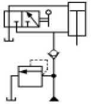
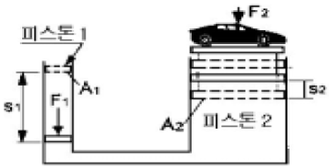
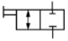
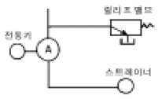

건설기계정비산업기사 (2005-03-20 기출문제)
1과목: 건설기계정비
1. 과급기를 설치하면 기관의 출력은 어느 정도 증가 되는가?
- 5 - 10 %
- 15 - 20%
- 35 - 45%
- 50 - 60%
(정답률: 55%)

2. 다음의 구성품 중 주유 할 필요가 없는 곳은?
- 대각지주(diagonal brace)
- 트랙(track)
- 트랙 긴도 조정 실린더
- 유니버살 조인트(universal joint)
(정답률: 86%)
3. 중량 10톤의 믹서트럭이 시속 80km/h로 주행하고 있다. 제동거리가 40m 이내가 되려면 제동력의 합이 얼마 이상이어야 하는가? (단, 공주거리는 0m, 관성 중량은 0.07W)
- 5850kgf
- 8270kgf
- 5560kgf
- 6740kgf
(정답률: 49%)
4. 보슈형 분사펌프의 각 플런저 분사량이 균일하게 되지 않는 원인은?
- 캠축 축방향의 유격이 있다.
- 조속기 스프링의 장력이 약하다.
- 연료공급 펌프의 압송능력이 좋다.
- 연료 파이프에 공기가 들어있다.
(정답률: 64%)
5. 도로 주행 타이어식 건설기계에서 속도계의 구동케이블 체결위치는?
- 앞차축
- 뒤차축
- 변속기 입력축
- 변속기 출력축
(정답률: 78%)
6. 임페라 브레이커, 스크린, 에어프런 피이더 등으로 구성되어 있는 건설기계는?
- 콘크리트 휘니셔
- 콘크리트 배칭 플랜트
- 크러셔
- 아스팔트 플랜트
(정답률: 57%)
7. 피스톤링의 절개구를 서로 120°방향으로 끼우는 이유는?
- 피스톤의 강도를 보강하기 위함
- 벗겨지지 않게 하기 위함
- 냉각을 용이하게 하기 위함
- 절개구 쪽으로 압축이 새는 것을 방지하기 위함
(정답률: 100%)
8. 건설기계의 유압계통에 가장 널리 사용되는 실(Seal)의 종류는?
- D-링 실
- O-링 실
- T-링 실
- X-링 실
(정답률: 97%)
9. 유압모터의 압력이 70kgf/cm2, 유량 20ℓ/min일 경우 최대 토크는? (단, 1회전에 대한 유량은 20㏄/rev이다.)
- 1.41kgf-m
- 2.23kgf-m
- 22.3kgf-m
- 223kgf-m
(정답률: 32%)
10. 지게차의 인칭밸브 불량시 나타나는 현상은?
- 원동기 회전 정지
- 지게차 주행 정지
- 작업장치 작동 정지
- 유압펌프 작동 정지
(정답률: 80%)
11. 다른 요소는 변화하지 않고 발전기 필드에 저항을 더 넣으면?
- 스테이터 코일에 열이 발생한다.
- 발전기 전압이 높아 진다.
- 발전기 전류가 높아 진다.
- 발전기 출력이 낮아 진다.
(정답률: 48%)
12. 조향클러치의 분리가 안되는 원인이 아닌 것은?
- 오일압력부족
- 압력스프링의 절손
- 오일량의 부족
- 수동드럼 내치마모
(정답률: 34%)
13. 로우더 장비에서 자동변속기를 제어하는 것이 아닌 것은?
- 스로틀 압력
- 가버너 압력
- 토크 변환기 속도
- 메뉴얼 시프트
(정답률: 40%)
14. 윈치로서 75(ton)의 화물을 0.1(m/s)의 속도로 감아 올릴 때 몇마력이 필요한가? (단, 효율 η = 100%라고 가정)
- 100ps
- 120ps
- 140ps
- 160ps
(정답률: 43%)
15. 기동전동기가 작동이 안된다. 원인이 아닌 것은?
- 연료 여과기가 막혔다.
- 축전지 불량
- 시동전동기의 배선 접촉 불량
- 퓨즈가 끊어졌다.
(정답률: 88%)
16. 열정산에서 냉각에 의한 손실이 30%, 배기에 의한 손실이 35%, 기계효율이 80%라면 정미 열효율은?
- 24%
- 28%
- 30%
- 35%
(정답률: 48%)
17. 앵글도저의 성능에 대한 설명 중 틀린 것은?
- 굴토작업, 굳은땅 옆으로 자르기, 제설작업 등에 쓰인다.
- 평탄도로에서 차에 견인력은 대체로 자중을 넘지 않는다.
- 좌우 경사 한계각은 60도 정도이다.
- 등판능력은 30도 정도이다.
(정답률: 50%)
18. 기관이 과열되는 원인으로 틀린 것은?
- 냉각수가 부족할 때
- 물펌프의 작동 불능 때
- 온도 조절기가 열려있을 때
- 라디에이터 코어가 막혀있을 때
(정답률: 87%)
19. 피스톤 지름 50mm, 크랭크 반지름 25mm인 기관에서 압축비를 8 로 만들면 연소실의 체적은?
- 12 cm3
- 14 cm3
- 86 cm3
- 98 cm3
(정답률: 49%)
20. 디젤엔진에서 공기빼기 작업순서로 다음 중 가장 알맞는것은?
- 연료탱크 - 연료필터 - 분사파이프 - 분사펌프
- 연료필터 - 분사펌프 - 공급펌프 - 분사파이프
- 연료필터 - 공급펌프 - 분사파이프 - 분사펌프
- 공급펌프 - 연료필터 - 분사펌프 - 분사파이프
(정답률: 55%)
2과목: 내연기관
21. 연소실의 체적이 22,500㎣ 가스 기관의 1행정 체적이 400cm3 이라면 이 기관의 압축비는 얼마인가?
- 1.06
- 18.8
- 20.8
- 56.2
(정답률: 37%)
22. 기관에서 캠축의 캠의 수는 어느 것과 관계가 있는가?
- 배기량
- 피스톤 수
- 기관의 밸브 수
- 밸브 간극
(정답률: 67%)
23. 라디에이터의 구비조건과 관계 없는 것은?
- 냉각수 흐름 저항이 클 것
- 대류 열전달이 좋을 것
- 단위면적당 방열량이 클 것
- 가볍고 강도가 클 것
(정답률: 85%)
24. 어떤 기관을 동력계로 측정하였더니 회전수 3500rpm에서 토크가 4.8kg-m이였다. 이 기관의 출력은?
- 약 23.5 PS
- 약 26.8 PS
- 약 36.7 PS
- 약 46.7 PS
(정답률: 27%)
25. 다음 중 다기통기관의 점화순서를 고려할 때의 사항이 아닌 것은?
- 이웃하는 실린더에 연속적으로 폭발이 일어나지 않도록 한다.
- 크랭크축의 비틀림이나 진동이 최소화 되도록 한다.
- 흡·배기가 서로 간섭하여 기관의 부조현상이 발생되지 않도록 한다.
- 크랭크축이 2회전하는 동안 각 실린더의 동력행정이 서로 다른 시간 간격을 두고 발생되어야 한다.
(정답률: 52%)
26. 제동연료 소비율 be=220 g/PS·h인 자동차용 가솔린기관의 제동 열효율은 얼마인가? (단, 연료의 저위발열량은 1⑤00 kcal/kgf 이다.)
- 27.38 %
- 30.62 %
- 31.47 %
- 34.27 %
(정답률: 0%)
27. 기관을 과급하는 가장 주된 목적에 해당되는 것은?
- 압축초 압축압력이 높아 착화지연 기간을 길게 하기 위해서이다.
- 기관 회전수를 높이기 위해서이다.
- 연료 소비량을 많게 하기 위해서이다.
- 급기밀도를 증가시켜 출력을 증가시키기 위해서이다.
(정답률: 72%)
28. 압력비 8인 단순 가스터어빈 사이클의 열효율은? (단, K＝1.4이다.)
- 62.4%
- 58.4%
- 36.6%
- 44.8%
(정답률: 31%)
29. 4행정 사이클 디젤기관의 성능에 영향을 미치는 인자로 가장 관계가 적은 것은?
- 배압(back pressure)
- 배기관 온도(exhaust manifold temperature)
- 흡기관 온도(intake manifold temperature)
- 부스트 압력(boost pressure)
(정답률: 70%)
30. 자동차용 내연기관의 연료로 탄화수소(CmHn)가 많이 사용된다. 이 탄화수소에 대한 설명으로 적합하지 않은 것은?
- 원자의 결합구조에 따라 방향족, 나프텐족, 지방족 등으로 나눈다.
- 탄소원자와 수소원자로 구성된다.
- 석탄가루와 수소를 연소시켜 만든다.
- 수소와 탄소원자의 배열상태에 따라 연료의 특성이 달라진다.
(정답률: 58%)
31. 왕복형 내연기관에 대한 설명 중 옳지 않은 것은?
- 4행정 사이클 기관에서는 팽창 행정 때 동력이 얻어진다.
- 가솔린 기관은 혼합기를 흡입하고 디젤기관은 공기만을 흡입한다.
- 실린더 내의 체적이 최소가 되는 피스톤 위치를 상사점이라 한다.
- 피스톤이 하사점에 있을 때의 실린더내 전체적을 행정체적이라 한다.
(정답률: 30%)
32. 윤활유가 열화하면 기관 각부에 오손현상이 발생한다. 다음 중 열화의 주된 요인이라고 보기에 거리가 먼 것은?
- 윤활유 자체의 산화에 의한 열화
- 외부 이물질의 혼입에 의한 열화
- 첨가제의 소모에 의한 열화
- 압축압력 저하에 의한 열화
(정답률: 69%)
33. 완전충전 상태에서 축전지 전해액의 비중(20℃)은 다음 중 어느 것에 가장 가까운가?
- 1.280
- 1.527
- 1.150
- 1.859
(정답률: 90%)
34. 피스톤 링의 3대 작용이 아닌 것은?
- 밀봉작용
- 냉각작용
- 오일제어작용
- 피스톤 마멸방지 작용
(정답률: 50%)
35. 가솔린 차량의 공연비와 배출가스에 대해 틀리게 설명한 것은?
- NOx는 이론공연비보다 약간 희박한 혼합비 영역에서 가장 많이 배출된다.
- CO는 불완전 연소시에 배출된다.
- HC는 증발가스가 60% 이상을 차지한다.
- HC는 농후하거나 희박한 혼합비 영역에서 증가한다.
(정답률: 46%)
36. 가솔린 200cc를 완전 연소시키기 위해 필요한 공기의 무게는 몇 kgf인가? (단, 혼합비 15이고, 가솔린 비중은 0.73이다.)
- 1.65
- 2.19
- 2.47
- 3.14
(정답률: 38%)
37. 직접분사식 전자제어 디젤엔진(커먼레일) 연료분사장치의 입력신호를 위한 센서로 적당하지 않은 것은?
- 공기 질량 센서
- 크랭크 위치 센서
- 휠 센서
- 캠 샤프트 위치 센서
(정답률: 80%)
38. 열역학 제 1법칙은?
- 에너지 보존에 관한 법칙이다.
- 에너지 변환에 관한 법칙이다.
- 에너지 축소에 관한 법칙이다.
- 열이 일로 변화하는 것에 대한 법칙이다.
(정답률: 90%)
39. 고속 디젤기관의 기본 사이클에 속하는 것은?
- 사바테 사이클
- 정압 사이클
- 정적 사이클
- 브레이톤 사이클
(정답률: 80%)
40. 실린더 내에서 폭발한 연소 가스의 일을 직접 측정한 마력은?
- 도시 마력
- 제동 마력
- 정미 마력
- 유효 마력
(정답률: 37%)
3과목: 유압기기 및 건설기계안전관리
41. 유압유가 국부적으로 압력이 낮아지면(진공상태) 유압 작동유 속에 녹아있는 공기가 기포로 되어 일어나는 현상과 가장 관계있는 용어는?
- 용해 현상
- 공동 현상
- 액화 현상
- 맥동 현상
(정답률: 76%)
42. 보기와 같은 방향제어 회로 명칭으로 가장 적합한 것은?

- 증압회로
- 배압회로
- 로킹회로
- 감압회로
(정답률: 43%)
43. 일정한 유량으로 유체가 흐를 때 관의 안지름이 절반인관으로 교체할 경우 유속은 몇 배가 되는가?
- 2
- 3
- 4
- 5
(정답률: 74%)
44. 패킹재료로 갖추어야 할 성질이 아닌 것은?
- 유연성이 없을 것
- 사용유체에 대한 저항성이 있을 것
- 내열성이 있을 것
- 내화성이 있을 것
(정답률: 84%)
45. 보기 그림에서 A1이 20cm2 이고 A2가 600cm2 일 때 피스톤 1의 변위 s1이 10cm 발생하였다면, 피스톤 2의 변위는 얼마인가?

- 0.66 cm
- 0.55 cm
- 0.44 cm
- 0.33 cm
(정답률: 44%)
46. 릴리프 밸브의 주 기능 설명으로 가장 적합한 것은?
- 유압회로의 최고압력을 제한하여 회로 내의 과부하를 방지한다.
- 유압회로의 최저압력 이하로 감압되지 않도록 한다.
- 유압회로의 압력을 작동 순에 따라 제한한다.
- 유압회로의 유압방향을 제어한다.
(정답률: 75%)
47. 직선운동을 하는 유압 액추에이터(actuator)인 것은?
- 유압 펌프
- 유압 실린더
- 유압 모터
- 유압 요동 모터
(정답률: 74%)
48. 작동유가 가지고 있는 에너지를 잠시 저축했다가 이것을 이용하여 완충작용을 할 수 있는 유압 기기는?
- 유체 커플링
- 유량 제어 밸브
- 축압기
- 압력 제어 밸브
(정답률: 84%)
49. 보기와 같은 유압·공기압 도면 기호의 명칭은?

- 2포트 수동 전환밸브
- 2포트 전자 변환밸브
- 3포트 수동 전환밸브
- 3포트 전자 변환밸브
(정답률: 66%)
50. 유압 관로에서 필요에 따라 유체의 일부 또는 전부를 분기시키는 관로와 가장 관계있는 용어는?
- 브레이크 관로
- 시퀀스 관로
- 바이패스 관로
- 카운터 관로
(정답률: 82%)
51. 밀링작업에 대한 설명 중 틀린 것은?
- 표면 거칠기는 손으로 검사해야 정확히 알 수 있다.
- 급속 이송은 한 방향으로만 한다.
- 급송 이송시 백래쉬 제거장치를 작동 해서는 안된다.
- 하향절삭은 백래쉬 제거장치가 작동하고 있을 때 한다.
(정답률: 81%)
52. 전장 부품 취급시 주의사항 중 틀린 것은?
- 절연된 부분은 오일로 깨끗이 세척한다.
- 시험기의 조작방법을 숙지한다.
- 접촉저항이 발생하지 않도록 확실히 조인다.
- 안전사항에 주의하고 특히 감전에 주의한다.
(정답률: 80%)
53. 타이어식 건설기계의 허브 작업시 옳지 않는 것은?
- 대형 잭으로만 안전하게 받친다.
- 사용한 오일실은 신품으로 교환한다.
- 분해하지 않는 타이어에는 고임목을 받친다.
- 허브를 떼어낼 때는 전용풀러를 상용한다.
(정답률: 81%)
54. 전기공구의 사용시 직접적인 주의사항이 아닌 것은?
- 물 또는 수분
- 전기코드의 상태
- 접지상태
- 작업장 주변의 정돈
(정답률: 70%)
55. 유압회로에서 유압유 누출을 방지하기 위하여 사용하는 오일실의 구비조건이다. 거리가 먼 것은?
- 내압성과 내열성이 클 것
- 내마멸성이 적당할 것
- 정밀가공면을 손상시키지 않을 것
- 설치하기가 까다로우며 복잡한 구조일 것
(정답률: 89%)
56. 다음 설명 중 옳지 않은 것은?
- 고열 작업장에서 땀을 많이 흘린 경우는 땀 3∼10ℓ당 물 1컵에 0.5∼1g의 소금을 타서 마실 것
- 작업을 위해 차를 받칠 때는 잭이나 호이스트에만 의존하지 말고 받침목을 고일 것
- 운행 중인 운반 차량 등에서 뛰어타거나 내릴 때는 운전자에게 신호를 보낼 것
- 들어 올리거나 운반할 물건은 크기와 무게를 검사하여 적절한 방법을 취할 것
(정답률: 79%)
57. 안전사고와 관련 있는 산업심리의 5대 요소가 아닌 것은?
- 습관
- 기질
- 정서
- 동기
(정답률: 49%)
58. 공구 보관시 올바른 방법은?
- 가지런히 벽에 세워서 보관
- 끝이 날카로운 공구는 아래로 세워서 보관
- 공장이나 바닥에 한쪽 옆으로 보관
- 보관상자에 넣어 습기나 수분이 없는 곳에 보관
(정답률: 77%)
59. 가스용접에서 토치 취급 방법으로 틀린 것은?
- 작업에 적당한 팁을 선택하고 산소와 아세틸렌의 압력을 조정 유지한다.
- 토치에 점화할 때는 성냥 등을 사용하여 점화한다.
- 팁이 가열될 때에는 냉각시키고, 산소 가스만을 적게 통하게 하여 서서히 냉각시킨다.
- 작업을 시작하기 전에는 호스나 토치의 연결 부분이 완전히 체결되었는가를 확인하여 사용한다.
(정답률: 93%)
60. 재해율 산정의 강도율 계산공식으로 적합한 것은?
- 강도율 = 근로손실일수/연근로시간 ⒡ 1,000
- 강도율 = 근로손실일수/연근로시간 ⒡ 1,000,000
- 강도율 = 연근로시간/근로손실일수 ⒡ 1,000,000
- 강도율 = 연근로시간/근로손실일수 ⒡ 1,000
(정답률: 57%)
4과목: 일반기계공학
61. 다음의 강판 중 차체 경량화와 가장 관계 있는 것은?
- 냉간압연강판
- 열간압연강판
- 표면처리강판
- 고장력강판
(정답률: 42%)
62. 세라믹스의 성질에 대한 설명으로 틀린 것은?
- 단단하고 취성이 있다.
- 융점이 낮다.
- 내열성, 내산화성이 좋다.
- 열전도율이 낮다.
(정답률: 45%)
63. 비중 8.9의 은백색을 띄며 내식성과 내열성이 커서 화학공업용, 화폐, 도금용으로 널리 사용되는 비철금속은?
- 주석(Sn)
- 아연(Zn)
- 납(Pb)
- 니켈(Ni)
(정답률: 52%)
64. 다음 중 주강제의 볼을 분사하여 표면가공을 함으로써 경도 및 피로강도를 향상시키는 표면가공법은?
- 쇼트 피닝
- 호닝
- 버어니싱
- 버핑
(정답률: 61%)
65. 호브(hob)라고 하는 공구를 사용하여 기어를 가공하는 공작기계는?
- 핵소오잉머시인
- 호빙머시인
- 버핑머시인
- 방전가공기
(정답률: 84%)
66. 축과 풀리 또는 기어의 허브(hub)사이에서 동력을 전달하는 요소로 널리 사용되고 있는 기계요소는?
- 코터
- 핀
- 키
- 나사
(정답률: 60%)
67. 저널에 작용하는 최대하중 W, 축의 직경을 d, 저널의 길이를 L 이라고 할 때 베어링 압력을 구하는 식은?
- W/(dL)
- (dL)/W
- d/(WL)
- L/(dW)
(정답률: 40%)
68. 공압밸브를 작동시키는 방법 중 전기적인 작동방법은?
- 레버
- 스프링
- 압축공기
- 솔레노이드
(정답률: 83%)
69. 정밀 주조법의 일종으로 정밀한 금형에 용융금속을 고압, 고속으로 주입하여 주물을 얻는 주조법은?
- 다이 캐스팅(Die casting)
- 원심주조법(Centrifugal casting)
- 셀 몰드법(Shell moulding process)
- 인베스트먼트법(Investment casting)
(정답률: 73%)
70. 베어링의 호칭번호가 6008일 경우 안지름은?
- 8mm
- 16mm
- 20mm
- 40mm
(정답률: 67%)
71. 변형률에 대한 설명으로 틀린 것은?
- 변형률은 탄성한계 내에서 응력과는 아무런 관계가 없다.
- 변형률은 탄성한계 내에서 응력과는 비례 관계가 있다.
- 변형률은 변화량과 본래의 치수와의 비를 말한다.
- 변형률은 길이와 길이 간의 비이므로 차원은 없다.
(정답률: 60%)
72. 금속 파이프 또는 봉재의 재료를 다이를 통과시켜 잡아당겨서 축 방향으로 테이퍼 구멍과 같은 다이 구멍의 최소 단면 치수로 가공하는 소성 가공법은?
- 단조(forging)
- 압연(rolling)
- 인발(drawing)
- 압출(extruding)
(정답률: 61%)
73. 다음 중 고압 탱크, 보일러 등과 같이 기밀을 필요로 하는 용기를 리벳에 의해 제작할 때 리벳 작업이 끝난 후 행하는 작업은?
- 리밍
- 드릴링
- 코킹
- 키
(정답률: 50%)
74. 관속을 충만하게 흐르고 있는 액체의 속도를 급격히 변화시키면 액체에 심한 압력의 변화가 생기는 데 이런 현상을 무엇이라 하는가?
- 퍼컬레이션
- 케비테이션
- 수격현상
- 서징현상
(정답률: 46%)
75. 길이 500mm의 봉이 인장하중을 받아 0.5mm 만큼 늘어났을 때, 인장변형률은?
- 1000
- 100
- 0.01
- 0.001
(정답률: 54%)
76. 그림은 정용량형 펌프와 릴리프 밸브 회로의 일부를 표시한 것이다. A 부에 가장 적합한 것은?

- 유압 실린더
- 오일 여과기
- 유압 펌프
- 방향제어 밸브
(정답률: 70%)
77. 선반을 이용한 절삭작업에서 절삭력에 영향을 미치는 인자가 아닌 것은?
- 절삭공구
- 공작물의 크기
- 이송량
- 절삭깊이
(정답률: 50%)
78. 모듈이 6, 잇수가 50인 표준 스퍼기어의 바깥지름[mm]은?
- 300
- 312
- 316
- 322
(정답률: 36%)
79. 다음 중 노 속에서 서냉하여 철강, 기타 금속 재료의 연화, 결정조직의 조정, 편석의 균일화 등을 갖기 위한 열처리 방법은?
- 뜨임
- 화염경화법
- 담금질
- 풀림
(정답률: 60%)
80. 외접한 한쌍의 표준평치차의 중심거리가 100mm이고, 한쪽 기어의 피치원 지름이 80mm일 때 상대기어의 피치원 지름은?
- 40mm
- 90mm
- 120mm
- 160mm
(정답률: 50%)